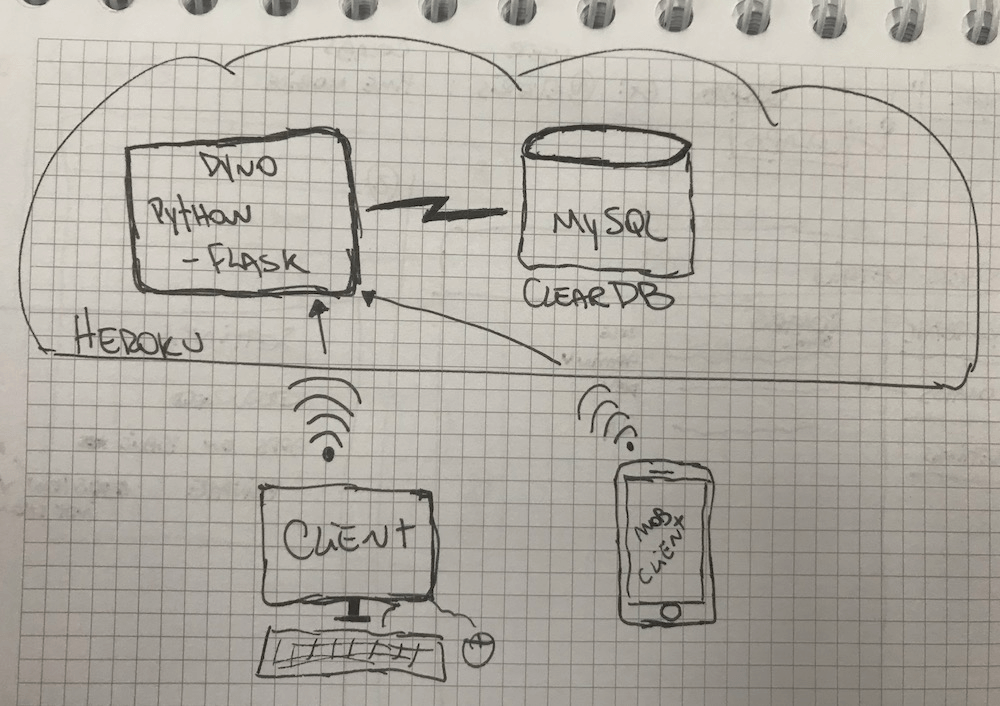
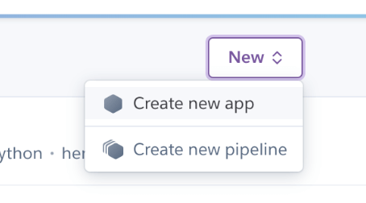
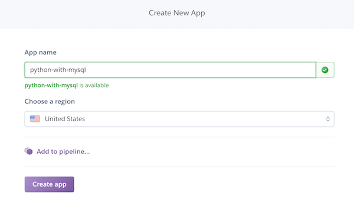
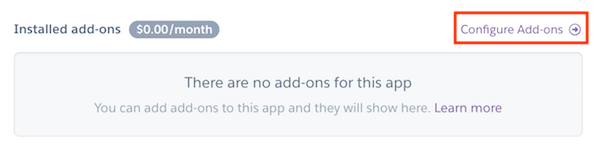
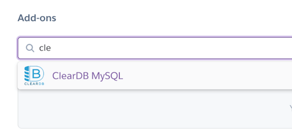
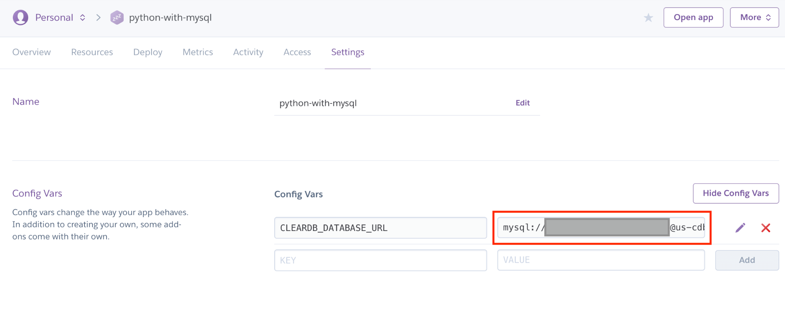
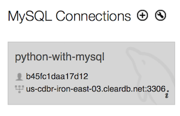
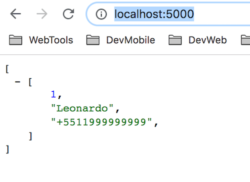
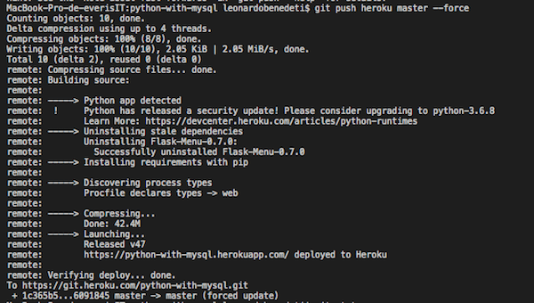
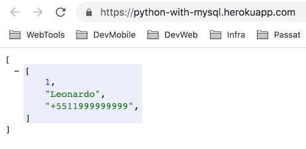

** Dessa vez foi no caderno da firma rsrs
Em um projeto na empresa que trabalho, em uma POC para a frente Mobile, precisamos criar uma API para um projeto mobile, porém como era uma POC precisavamos fazer o teste com o menor custo possível, se possível zero.
Com isso em mente, criamos tudo no Heroku e abaixo vai um pequeno passo a passo de como configurar um App no Heroku usando:
- Python Flask - para consultar os dados no banco e responder ao client
- MySQL ClearDB - Addon do Heroku que permite criar um DB de até 5MB(mais que suficiente para uma POC)
Primeiro passo: Configurar o app no Heroku com o Addon MySQL
Para conseguirmos fazer tudo o que pretendemos precisamos deixar tudo configurado e vamos fazer isso aqui.
Começando pela criação do app no Heroku: 

Após criar o aplicativo vamos precisar incluir os addons, no caso vamos incluir um addon para storage MySQL. O addon escolhido foi o ClearDB pela facilidade e ter uma faixa gratuita.

Na imagem acima é preciso clicar em configure add-ons e com isso será direcionado para uma página onde a busca da imagem abaixo será mostrada.

Agora com o Add-on configurado precisamos nos conectar no banco para criar as tabelas e incluir dados para consumir.
Para isso precisamos ir até as configurações de nosso app e abrir as variáveis de configuração.
Lá vamos encontrar todos os dados para conectar com o banco.
Com o seguinte formato:
mysql://[user]:[passwd]@[host]/[default_schema]

Segundo passo: Criar as tabelas e incluir dados
Para este item eu costumo utilizar o MySQL Workbench, mas qualquer cliente, inclusive terminal pode ser utilizado.

Após conectar, crie suas tabelas e dados, eu criei uma tabela simples para exemplificar.
CREATE TABLE users (
idusers INT NOT NULL,
name VARCHAR(45) NULL,
phone VARCHAR(45) NULL,
PRIMARY KEY (idussers)
);
Terceiro passo: Subir a app no heroku com um hello world
Um aplicação python no heroku requer alguns cuidados para subir certinho e vamos passar por todos aqui.
requirements.txt Arquivo responsável por abrigar todos as libs que vamos importar no projeto. O próprio nome já diz certo? Requirements. =D
Flask-MySQLdb==0.2.0
gunicorn==19.8.1
mysqlclient==1.3.12
Flask==0.12.2
Flask-Cors==3.0.3
Flask-MySQL==1.4.0
PyMySQL==0.8.1
Nesse caso temos algumas libs que vamos precisar. Básicamente todas girando no universo do Flask e MySQL
Procfile Arquivo exclusivo do heroku para inicializar os apps. Ele pode abrigar scripts para iniciar sua aplicação.
web: gunicorn api:app
Nesse caso o trecho procura a app dentro do arquivo api e inicia utulizando o gunicorn
api.py Arquivo principal da aplicação. Aqui temos todos os códigos básicos para retornar um response.
from flask import Flask, jsonify
from flask.ext.mysql import MySQL
app = Flask(__name__)
mysql = MySQL()
# MySQL configurations #### REVER trecho de configuração para buscar as informações
app.config['MYSQL_DATABASE_USER'] = 'USER'
app.config['MYSQL_DATABASE_PASSWORD'] = 'PASSWD'
app.config['MYSQL_DATABASE_DB'] = 'DEFAULT_SCHEMA'
app.config['MYSQL_DATABASE_HOST'] = 'HOST'
mysql.init_app(app)
# routes
@app.route('/', methods=["GET", ])
def index():
conn = mysql.connect()
cursor = conn.cursor()
users = cursor.execute("SELECT * FROM users")
users = cursor.fetchall()
conn.close()
return jsonify(users)
if __name__ == "__main__":
app.run(debug=True)
Por último os resultados dessa saga.
Temos duas maneiras de testar:
Localmente Com o heroku cli baixado temos um recurso para utilizar com as mesmas configurações do app, porém localmente. Para isso basta digitar no terminal, dentro da pasta do projeto.
heroku local web
Este comando irá iniciar localmente um server de acordo com o seu app, normalmente na porta 5000.

Publicando
Para publicar o app no heroku basta fazer um git push heroku master. Como o heroku é baseado em git ele vai entender o commit e iniciar o build com os novos códigos.
 ** ignorem o –force do comando, não é necessário. Tinha outra aplicação rodando nesse link e o merge não seria tão amigável rsrs
Após o build acima basta clicar no link que o CLI retornou et voilá.

Caso queira baixar os códigos para criar sua API FLASK acesse o repo